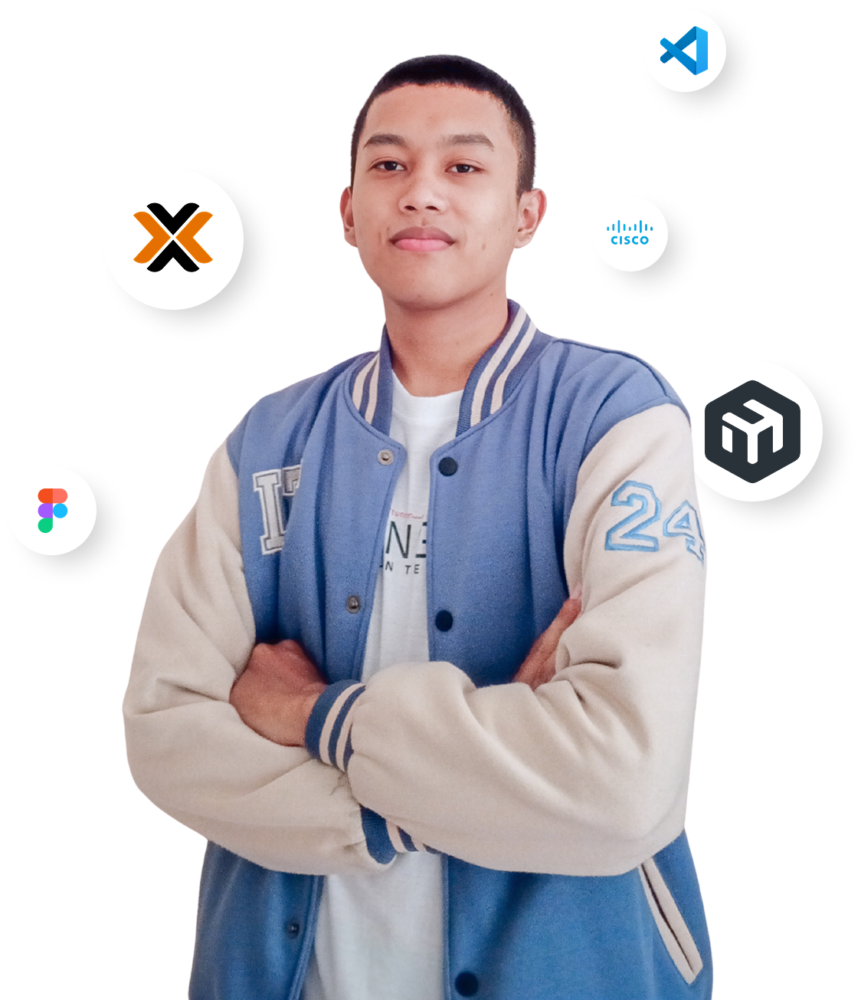

| About Me
Proactive Information Technology student with a deep interest in IT Infrastructure and Computer Networks. Gained practical experience as a Teaching Assistant for Operating Systems and Computer Networks courses, and as a member of the Media & Communications division at the IT Infrastructure Laboratory
My Skills
Mikrotik
Internet Network
PROXMOX
Server Administration
CISCO
Internet Network
LINUX
Linux Server
Windows
Windows Server
HTML
Programming
CSS
Programming
Python
Programming
C#
Programming
PHP
Programming
Javascript
Programming
ARDUINO
IoT & Embedded
FIGMA
Graphic Design
My Education
Bachelor of Computer Science, University of Jember

2023 - Present
SMKN 1 Lumajang
2019 - 2023
My Experiences
IT Infrastructure Laboratory
2024 - Sekarang
PT. Telkom Indonesia (Datel Lumajang)
July - September 2022
CV. Citra Media Computer
July - March 2022
My Awards
1st Place | PLAY IT National Competition (UI/UX Design) - Politeknik Negeri Malang
November 2024
Successfully designed an innovative application solution as part of a team, applying the Design Thinking methodology to effectively solve user problems.
3rd Place | Ilkom Creative Entrepreneur Competition (Business Design) - Faculty of Computer Science, University of Jember
November 2024
Played a key role in a team to design an innovative business solution integrating IoT technology. Was responsible for developing the business process flow to ensure operational efficiency and scalability.
1st Place | Essay Competition for SATGAS PPKS University of Jember Anniversary
November 2024
Achieved first place in a team essay competition, conducting in-depth research and critical analysis of complex issues. Developed and presented innovative ideas coherently and persuasively.